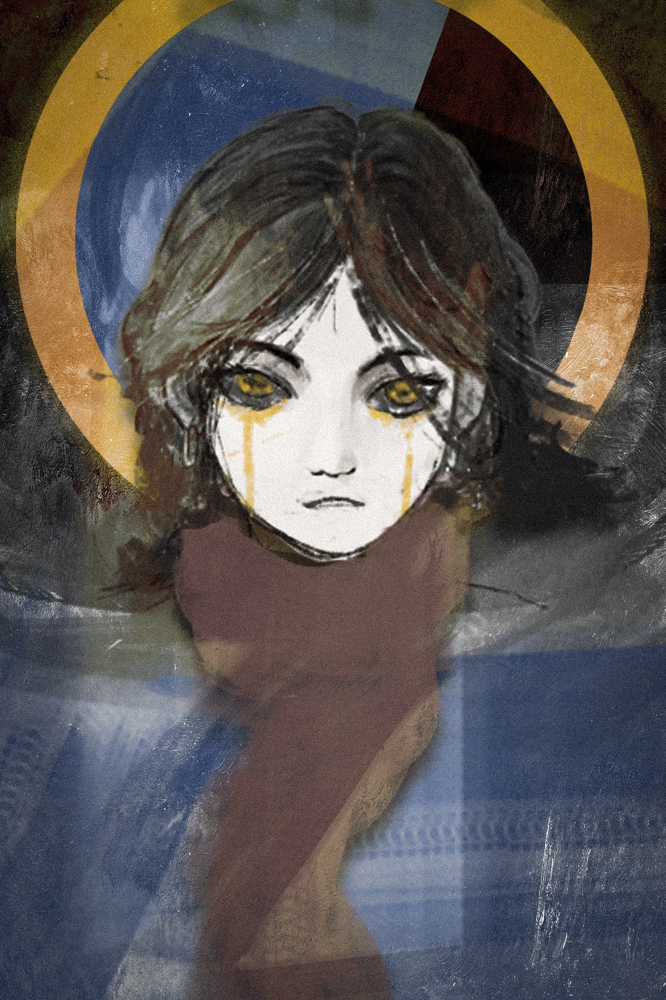

随想
后保研时代

保研之后，整个人都处于一个浑浑噩噩、终日无所事事的状态。今日又查了些许毕业论文的资料，竟发现有很多传教士的档案被遗漏了，且基本足以支撑新开一整个章节的内容。 既然如此，那就加油吧。 祝我的好同学、好朋友、好兄弟韦昆伦和徐嘉泽考研顺利，也祝我的好室友排尔哈提考研顺利。
随想

保研之后，整个人都处于一个浑浑噩噩、终日无所事事的状态。今日又查了些许毕业论文的资料，竟发现有很多传教士的档案被遗漏了，且基本足以支撑新开一整个章节的内容。 既然如此，那就加油吧。 祝我的好同学、好朋友、好兄弟韦昆伦和徐嘉泽考研顺利，也祝我的好室友排尔哈提考研顺利。